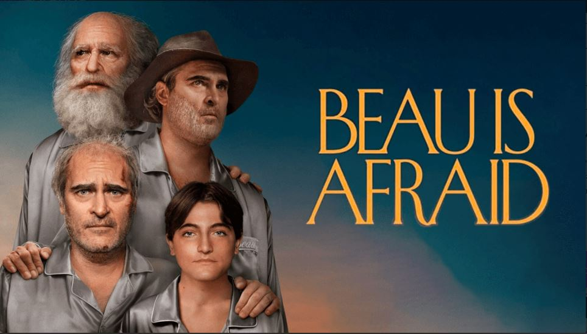

"Beau tiene miedo, analizando las temáticas de Ari Aster"
enero,5 2023
Volver a Películas
Ari Aster se ha convertido en uno de los directores y guionistas más seguidos de los últimos
años gracias a sus dos primeros largometrajes: Hereditary y Midsommar. Ahora regresa con la
que es probablemente una de las películas más esperadas del año; sin embargo, no está
obteniendo críticas muy positivas. En esta reseña de Beau tiene miedo (Beau is Afraid,
2023), haré un análisis sobre sus anteriores cortos y películas, además de darte una idea
general de qué esperar de este filme. Porque créeme, quieres prepararte para esta película
de tres horas de duración que te hará pensar «¡¿qué rayos acabo de ver?!».
La trama sigue a Beau (Joaquin Phoenix), un adulto que, justo antes de salir de viaje para
visitar a su mamá, pierde las llaves de su casa. Beau, es un personaje neurótico y
esquizofrénico, y el público se adentra en la película únicamente a través de la perspectiva
del personaje, convirtiendo esta historia en un remolino de sucesos llenos de paranoia y
hechos muy bizarros a lo largo de diferentes etapas de su vida.
Director y guionista: Ari Aster
Reparto principal: Joaquin Phoenix, Patti LuPone, Armen Nahapetian
Género: Drama, Comedia, Terror
País: Estados Unidos
Trailér